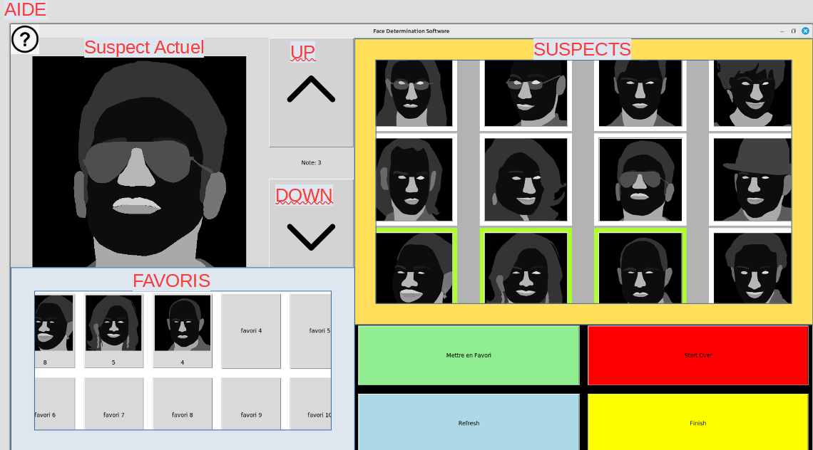

Mode d'emploi Face Recognition Software
-

- Boutons Suspects
12 images cliquables de potentiels suspects. Sélectionnez en une et modifiez sa note soit en cliquant sur Mettre en Favori, soit en cliquant sur les boutons up et down (voir ci-dessous). Un suspect avec une note parmi les 10 plus élevées et supérieure ou égale 4 apparaîtra parmi les favoris.
- Boutons Favoris
10 images cliquables des meilleurs suspects. Initialement vide. Ces 10 favoris serviront de modèles pour générer des images de suspects de plus en plus ressemblantes au coupable. Vous pouvez réordonner l'ordre des favoris en les glissant les uns sur les autres (cela modifie leur note). Vous pouvez aussi les sélectionner en cliquant pour modifier leur note à l'aide des boutons up et down (voir ci-dessous).
- Label Suspect actuel
Une image en grand format du suspect ou du favori actuellement selectionné. Après avoir cliqué sur un favori ou un suspect, ce dernier apparaîtra en grand, en haut à gauche, pour une meilleur visibilité. Le suspect ou le favori affiché à cet endroit est celui dont la note sera modifié en cas de clique sur les boutons up et down.
- Bouton Mettre en Favori
Si l'objet en suspect actuel est un suspect ne faisant pas parti des favoris, l'ajoute au favori avec une note de 7.
- Bouton Start Over
Réinitialise l'écran principal, les favoris, les suspects, les notes.
- Bouton Refresh
Génère et affiche une vague de 12 nouveaux suspects à partir des favoris existant.
- Bouton Finish
Met fin au processus de génération et affiche les résultats.
- Bouton UP
Met +1 à la note du suspect actuel.
- Bouton UP
Met -1 à la note du suspect actuel.